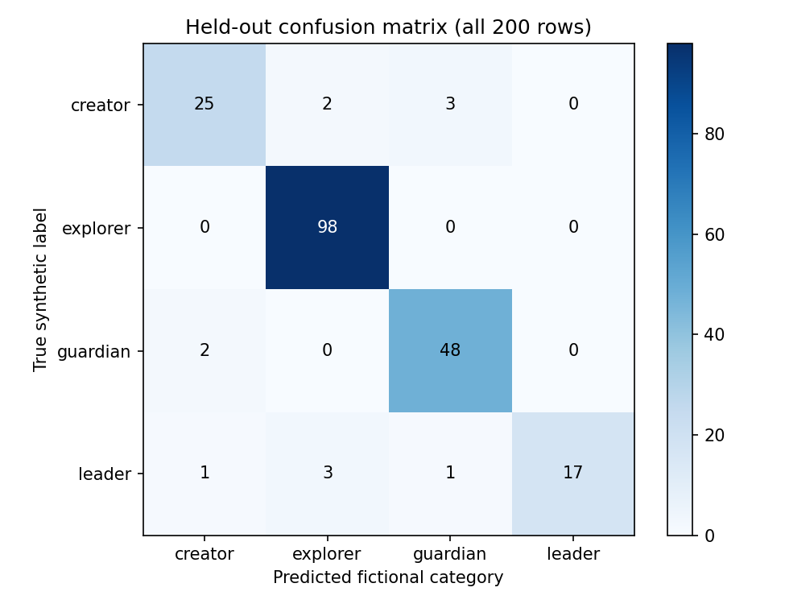
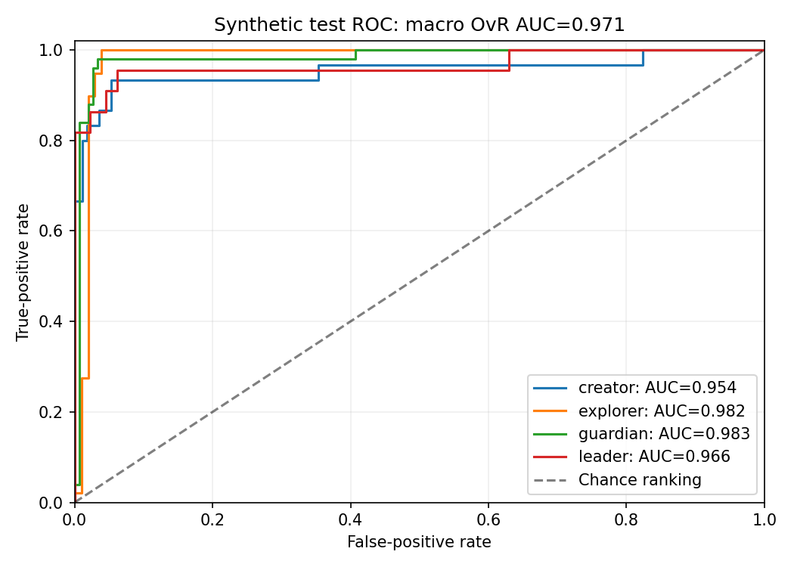
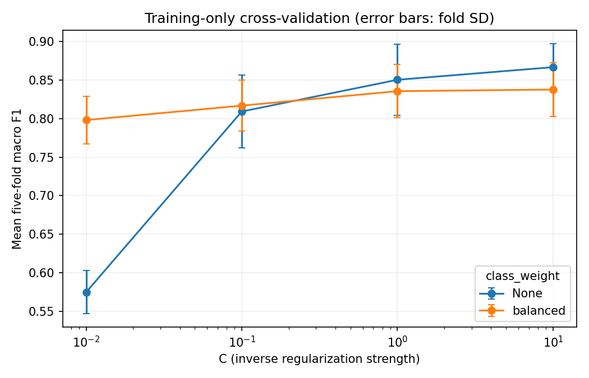
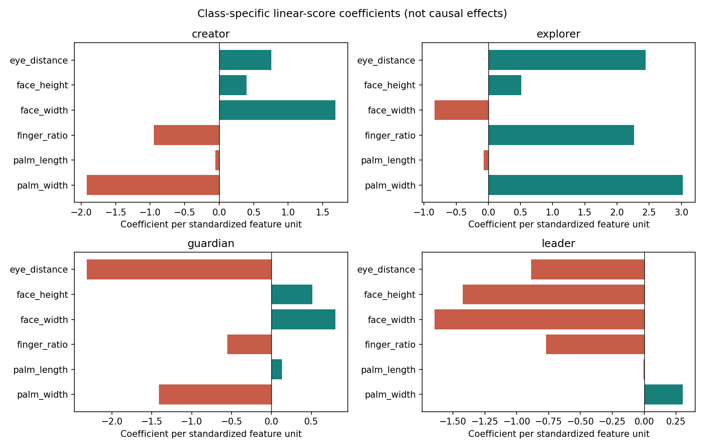

Fictional synthetic categories; no personal assessment.
Held-out accuracy: 0.940; macro F1: 0.913; macro OvR AUC: 0.971.
Majority baseline accuracy: 0.490; macro F1: 0.164. Acceptance coverage: 0.960 at threshold 0.60.
Read the full evaluation report for all tables, assumptions, and limitations.



